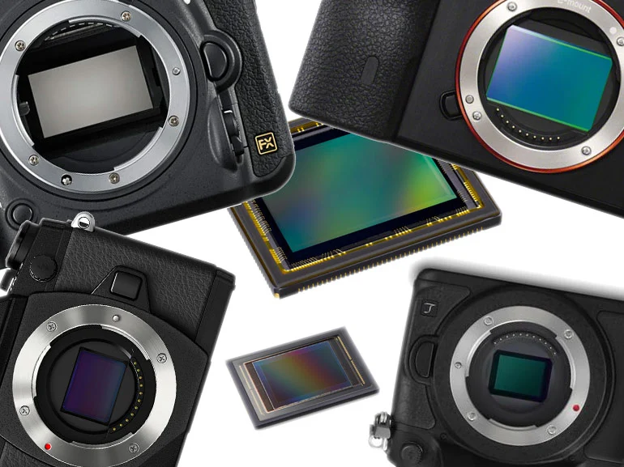

Un capteur photo est un dispositif qui transforme la lumière reçue par l'objectif de l'appareil en signaux électriques. Ces signaux sont ensuite traités pour former une image numérique. Les capteurs déterminent la qualité, la sensibilité et la résolution des photos.

| Caractéristique | Description |
|---|---|
| Résolution | Nombre de pixels |
| ISO | Sensibilité à la lumière |